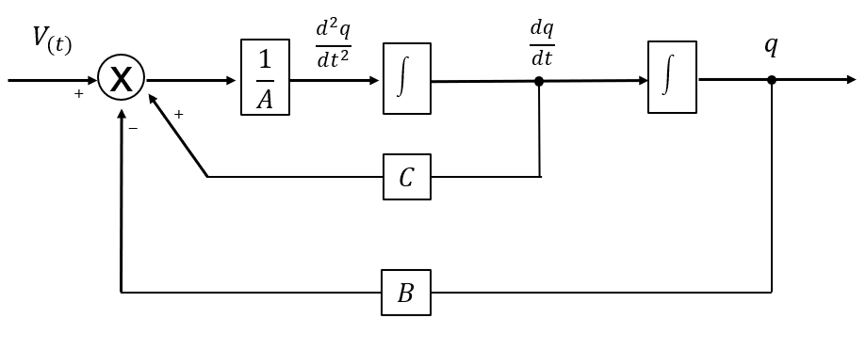

Sistemas Dinámicos
¿Que es un Sistema Dinámico?
Un sistema Dinámico es aquel que cambia en función al tiempo
Tipos de Sistemas Dinámicos
- Malla Abierta
- Malla Cerrada
Su señal de salida no es comparada con su señal de entrada

Sufre cambios a partir de sus entradas que varían con el tiempo y surgen nuevas salidas retroalimentadas

Clases de sistemas dinámicos según el número de entradas y salidas
- SISO - (Single Input, Single Output)
- MISO - (Multiple Input, Single Output)
- MIMO - (Multiple Input, Multiple Output)
- SIMO - (Single Input, Multiple Output)
Es aquel sistema, en el cual recibe una señal como valor de entrada, pasa por uno o varios procesos y genera una sola salida
Es aquel sistema, en el cual recibe varias señales como valores de entrada, pasa por uno o varios procesos y genera una sola salida

Es aquel sistema, en el cual recibe varias señales como valores de entrada, pasa por uno o varios procesos y genera varias salidas
Es aquel sistema, en el cual recibe una señal como valor de entrada, pasa por uno o varios procesos y genera varias salidas
Diagramas de bloques

Elementos de un diagrama de bloque
- Señales
- Bloques
- Punto de suma
- Bifurcación
Flechas que componen el diagrama
Representan una función de transferencia de una estructura de control
Es representado como un circulo que indica una operación de suma o resta

Es un punto en el cual, la señal proveniente de algún bloque puede tomar paralelamente diferentes caminos para llegar a otros bloques
Ejemplo
Actividad para afianzar lo aprendido
Despeje la siguiente ecuacion y realice su respectivo diagrama de bloques.
- Despejar la derivada de mayor grado que en este caso es
- Procedemos a dibujar el diagrama de bloques en base a la ecuación despejada previamente.

Presentado por:
- Jose ahumada
- Yanvier Tamara
Ing. de sistemas